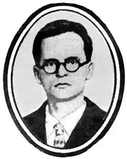

Атаманюк Василь Іванович родом із с. Яблунева Косівського району на Івано-Франківщині. Побачив він світ 14 березню 1897 р. у бідній селянській родині. В 1909-1915 роках навчався в Коломийській гімназії.
У роки першої світової війни служив в австрійській армії, затим працював перекладачем у Пресбюро, був січовим стрільцем. У 1918-1920рр. мешкав у Катеринославі, де за Центральної Ради працював секретарем місцевої газети "Боротьба", завідувачем "трудової школи". 1922р. переїхав до Києва, прилучився до літературної організації "Західна Україна".
Перша збірка його лірики "Як сурми заграли до бою" побачила світ ще 1916р. Згодом вийшли друком книжки поезій "Чари кохання" (1921), "Хвилі життя" (1922), "Жовтень" (1924), "Галичина" (1925), "За Збручем грози" (1930), "Дума про Степана Мельничука" (1924), "Тяжкі роки" (1930), "Батіг і багнет", "Крізь кривду і кров" (1932), у яких зображені болі й страждання західноукраїнського трудового села в умовах польсько-шляхетського гніту, наростання у ньому революційних настроїв. Як перекладач видав антологію "Нова єврейська поезія" (1923), упорядкував збірники "Сатира і гумор" (1926), "Літературні пародії" (1927), "Революційні пісні Західної України" (1928), "Революційна поезія Західної України" (1930), "Антологія західноукраїнської поезії" (т. 1-3, 1930-1931). Писав Василь Атаманюк і твори для дітей. Заарештований 31 січня 1933 року в Києві. В обвинувальному висновку органами ДПУ йому інкриміновано такий злочин: "Атаманюк був одним із керівників київської організації УВО (Українська військова організація). З його ініціативи і під його керівництвом була створена в Києві організація галицьких письменників — "За плуг", перейменована в 1923р. в "Західну Україну", що ставила своєю метою організацію контрреволюційних повстанських сил". Письменника звинувачували в тому, що він вів "активну контрреволюційну діяльність, спрямовану на повалення радянської влади і встановлення української буржуазно-демократичної республіки". Вимучений на допитах тортурами В. Атаманюк вимушено визнав себе винним і звів на себе й на деяких інших письменників наклеп, 1-го жовтня 1933р. "судовою трійкою" ДПУ УРСР був засуджений на п'ять років ув'язнення. Перебуваючи в концтаборі "Карлаг", він звернувся 1 березня 1935р. із проханням про помилування до особливого уповноваженого НКВС в м. Москві У своєму листі писав; "Після арешту неймовірними зусиллями деяких слідчих, які знущалися наді мною, били, двадцять діб не дозволяли спати і лягати, заставляли безперервно бігати, загрожували різними тортурами і т. ін., помістили серед польських шпигунів. Мене довели до безвольного несвідомого стану, і я вимушений був зізнатися під диктування в неіснуючих злочинах." Прохання про помилування надіслав і до Й. Сталіна (19.05.1937) та Вишинського (29.05.1937). Проте вони не полегшили його долі. Навпаки. Особлива трійка УНВС 9 жовтня 1937р. винесла йому новий вирок: "Атаманюка-Яблуненка Василя Івановича розстріляти". Василь Атаманюк реабілітований посмертно. ЛУ 19(4428) 9.05.1991